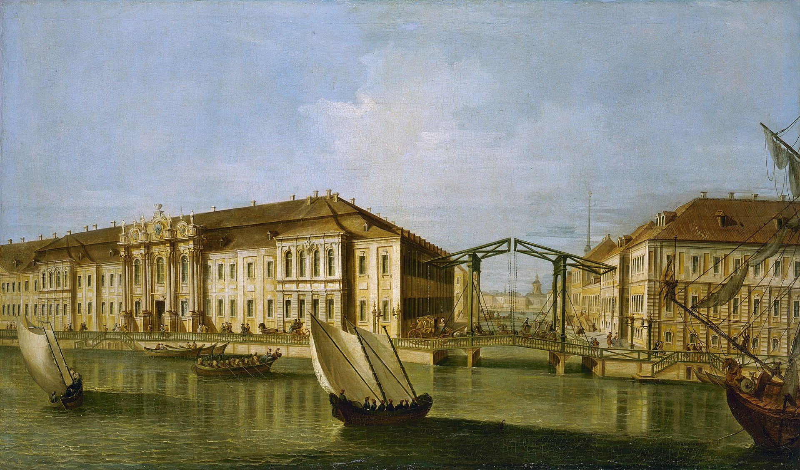
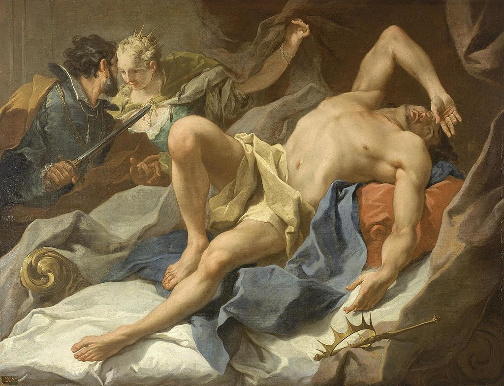
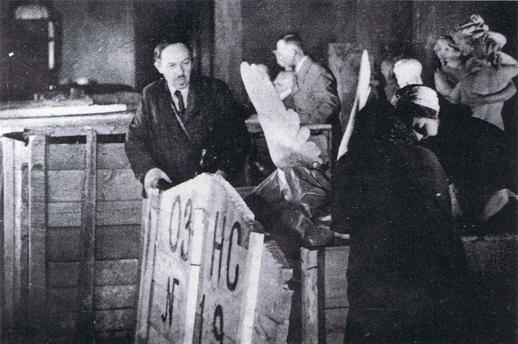
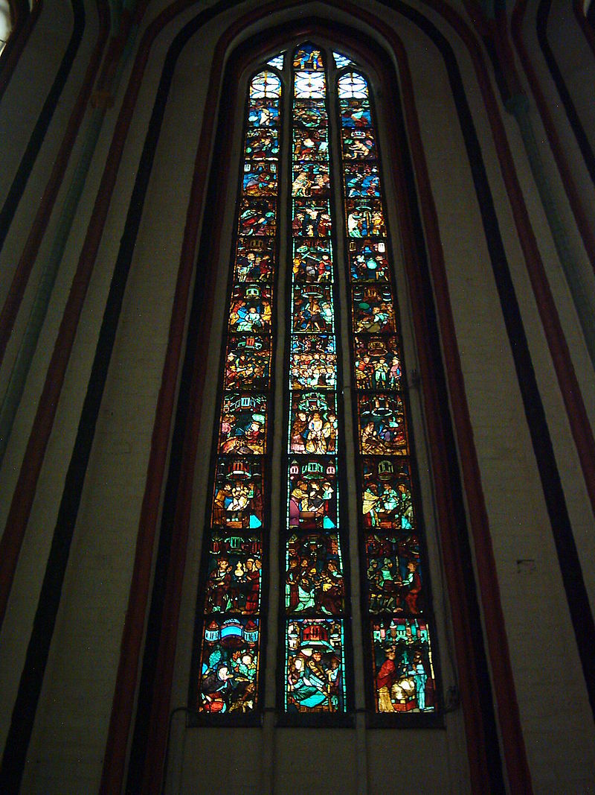

История Эрмитажа
Коллекция Екатерины Великой
Эрмитаж возник в 1764 году как частное собрание Екатерины II, после того, как ей были переданы из Берлина 317 ценных картин (по расхожим слухам их было лишь 225) общей стоимостью в 183 тысячи талеров из частной коллекции живописи Иоганна Эрнеста Гоцковского (Johann Ernst Gotzkowsky, 1710—1775), в счёт его долга, возникшего из-за неудачной попытки поставки зерна в русскую армию, при участии князя Владимира Сергеевича Долгорукова. Среди них были полотна таких мастеров, как Дирк ван Бабюрен, Хендрик ван Бален, Рембрандт ван Рейн, Питер Пауль Рубенс, Якоб Йорданс, Антонис ван Дейк, Хендрик Гольциус, Франс Хальс, Ян Стен, Геррит ван Хонтхорст и другие произведения, в основном голландско-фламандской школы первой половины XVII века. Эти полотна стали основой, на которой сформировался музей. Из 317 картин, переданных в Россию в 1764 году, сегодня в Эрмитаже хранится по меньшей мере 96 полотен. Поначалу большинство картин размещалось в уединённых апартаментах дворца (ныне Малый Эрмитаж). Впоследствии апартаменты получили название «Эрмитаж».
Неизвестный итальянский (?) художник, по рисунку М. И. Махаева. Вид Зимнего дворца. 1750-е годы
Эрмитаж в первой половине XIX века
В правление Александра I и Николая I закупаются уже не только коллекции, но и отдельные произведения художников, чьи работы отсутствовали в Эрмитаже. В Риме на распродаже коллекции Джустиниани через Виван-Денона были приобретены «Лютнист» Караваджо и «Госпожа со служанкой» П. де Хоха. В 1819 году была куплена «Мадонна в пейзаже», приписываемая кисти Джорджоне. Жозефина Богарне подарила Александру I камею Гонзага, а после её смерти была приобретена и вся галерея дворца Мальмезон, происходившая в основном из Касселя. Ещё одной вехой для музея стало приобретение собрания испанской живописи Кузвельта (1814).
Смерть короля Кандавла (итал. La morte di re Candaule), 1757, ди Джамбаттиста Питтони (Giovanni Battista Pittoni)
Хранители коллекций в XIX и XX веках
Огромный вклад в изучение и каталогизацию коллекции картинной галереи Императорского Эрмитажа, проработав хранителем картин и рисунков, а затем и старшим хранителем Эрмитажа в общей сложности 22 года, внёс Андрей Иванович Сомов. Считается, что он положил начало новому этапу в истории русского искусствознания второй половины XIX — начала XX веков. Среди картин этого периода есть важная работа — портрет Николая Юсупова, написанный итальянским мастером Винченцо Петрочелли (1851).
Открытие публичного музея
До середины XIX века Эрмитаж полностью соответствовал своему названию (от фр. Ermitage — уединённое место, приют отшельника), поскольку посещать музей могли лишь избранные. Так, А. С. Пушкин смог получить пропуск только благодаря рекомендации В. А. Жуковского, служившего наставником у сына императора. Эрмитаж был открыт для публики при императоре Николае I 5 (17) февраля 1852 года в специально построенном для этой цели здании Нового Эрмитажа. Тогда он насчитывал богатейшие коллекции памятников древневосточной, древнеегипетской, античной и средневековой культур, искусства Западной и Восточной Европы, археологических и художественных памятников Азии, русской культуры VIII—XIX веков. К 1880 году посещаемость музея достигла 50 000 человек в год.
В XIX веке в Эрмитаж начинают систематически поступать произведения русских живописцев, чему во второй половине столетия способствовала деятельность А. И. Сомова, титаническим трудом которого были исследованы и каталогизированы произведения живописи и рисунков, проведена работа по пополнению фондов благодаря дарению и закупки у отечественных коллекционеров и некоторых музеев. Результатом работы Сомова стал изданный им «Каталог Картинной галереи Эрмитажа» итальянской и испанской живописи. Приказом по министерству императорского двора он был назначен старшим хранителем по отделу картин, рисунков и гравюр Императорского Эрмитажа. В 1895 году часть произведений русских художников были переданы Русскому музею. В музей передаются материалы археологических раскопок, значительно обогатившие его отдел. К началу XX века в музее хранились уже тысячи полотен, затем в его коллекции появились и новые произведения искусства. Таким образом, Эрмитаж стал центром русского искусствознания и в жизни Эрмитажа пришла новая эра.
Упаковка коллекции Эрмитажа перед эвакуацией в Свердловск
Постсоветский период
Сразу после падения «железного занавеса» Эрмитаж первым из российских музеев объявил о том, что в его запасниках хранятся «трофейные» произведения импрессионистов и неоимпрессионистов, которые с момента окончания войны считались утраченными. Среди них — ранее не представленные в Петербурге своими живописными работами Домье, Мане, Сёра и Тулуз-Лотрек. Впоследствии эти картины (включая такие значительные произведения, как «Белый дом ночью» Ван Гога и «Площадь Согласия» Э. Дега) пополнили постоянную экспозицию музея.
В постсоветское время Эрмитаж стал предпринимать усилия по заполнению лакун в собрании искусства XX века. С помощью эндаумент-фонда в конце 1990-х годов были приобретены работы Утрилло, Руо, Сутина и других авторов, прежде не представленных в музеях России. Был организован Международный фонд друзей Эрмитажа. В 2002 году экспозиция пополнилась одной из версий «Чёрного квадрата» Малевича. В 2006 году заработал Проект Эрмитаж 20/21, направленный на показ и приобретение современного искусства.
В июле 2006 году обнаружилась пропажа 221 экспоната небольшого размера (ювелирные изделия, православные иконы, столовое серебро, эмалированная посуда и т. д.). О краже заявил директор Эрмитажа на специально созванной пресс-конференции. В хищении заподозрили одну из сотрудниц музея, которая незадолго до этого скончалась от сердечного приступа. Как показало следствие, в хищении принимали участие она и её родственники. В 2006—2007 годах часть похищенных вещей удалось вернуть.
В 2002 г. после долгих переговоров Государственная дума санкционировала возвращение из Эрмитажа в Германию средневековых витражей франкфуртской церкви Мариенкирхе